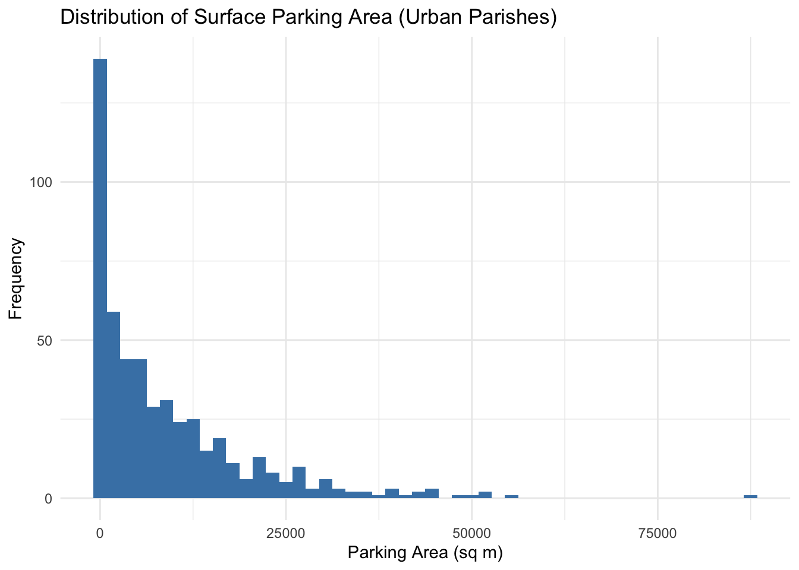

Canonical Rigidity and the Misallocation of Sacred Space: A Spatial Econometric Analysis of the US Catholic Church
Working Paper Series in Urban and Religious Economics
Author
Affiliation
Benedict Leonardi
University of Cincinnati, Department of Economics
Published
June 9, 2026
Abstract
This paper investigates the economic inefficiencies arising from the misalignment between legacy institutional boundaries and modern spatial demand within the Roman Catholic Church in the United States. Utilizing a comprehensive dataset of 23,000 geolocated parishes, combined with AI-derived infrastructure footprints from Overture Maps and tract-level US Census data, we test two primary hypotheses. First, we hypothesize that “Canonical Rigidity”—the adherence to 19th-century territorial boundaries—creates significant spatial “leakage,” where parishioners bypass their legally assigned parishes for closer alternatives, thereby undermining localized monopoly power and creating service delivery inefficiencies. Second, we quantify the “Shadow Value of Sacred Land,” estimating the opportunity cost of underutilized surface parking in high-density urban cores. Our spatial econometric model reveals that approximately 15% of urban parishes exhibit severe service-to-population density mismatches. We estimate that a strategic consolidation of these assets into multi-family residential housing could generate substantial social welfare gains by mitigating localized housing shortages and stabilizing institutional balance sheets through ground-lease revenue.
1 Introduction
The spatial distribution of religious institutions in the United States often serves as a living fossil of 19th and early 20th-century urban morphology. While the “Economics of Religion” has traditionally focused on the competition between denominations (Iannaccone, 1998), the internal spatial management of large, centralized denominations like the Roman Catholic Church offers a unique laboratory for studying institutional rigidity.
The Church operates as a series of nested territorial monopolies. Every square meter of US soil is assigned to a specific Parish (Level 1) and a Diocese (Level 2). This structure was designed for a “pedestrian-accessible” era of high adherence. However, the 21st-century context is defined by automobile-based mobility, declining participation, and a chronic urban housing shortage.
This paper provides a rigorous econometric evaluation of this mismatch. We move beyond descriptive statistics to model the Deadweight Loss of Spatial Rigidity. By using Voronoi tessellations to define “Natural Market Areas” and comparing them to “Canonical Boundaries,” we quantify the degree of spatial leakage. Furthermore, we employ AI-derived infrastructure data to estimate the land-use efficiency of the Church’s real estate portfolio.
2 Theoretical Framework: The Hotelling-Losch Model of Sacred Space
We frame the parish as a firm providing a public good (ritual services) with a transport-cost sensitive demand function. Following Hotelling (1929), a rational parishioner \(j\) chooses a parish \(i\) to minimize:
\[ C_{ij} = P_i + t \cdot d_{ij} \]
Where \(P_i\) is the “social price” (tithing/participation), \(t\) is the transportation cost per unit distance, and \(d_{ij}\) is the Euclidean distance.
In a frictionless market, the boundaries between parishes would form a Voronoi Tessellation. However, Canon Law imposes a “Canonical Boundary” \(B\). When \(d_{ij} < d_{ik}\) but \(j \in \text{Parish}_k\) according to \(B\), a state of Spatial Leakage exists. This leakage reduces the “Captive Audience” of a parish, leading to supply-side underutilization (empty pews) and excessive overhead costs.
2.1 Extension: Huff Gravity Model of Parish Choice
The Hotelling framework assumes binary discrete choice. A more realistic formulation treats attendance probability as a continuous gravity function. Following Huff (1963) and its application to religious service markets in Brañas-Garza & Neuman (2004), we model the probability that a household at location \(j\) attends parish \(i\) as:
where \(S_i\) is a measure of parish “attractiveness” (proxied by weekly service frequency), \(d_{ij}\) is distance, and \(\alpha, \beta\) are estimated elasticity parameters. This formulation generates a continuous leakage surface: for each parish, the share of its canonical population that the model assigns to a competing parish.
We define the Canonical Leakage Index (CLI) for parish \(i\) as:
where \(B_i\) is the set of Census block groups within parish \(i\)’s canonical boundary. A CLI of 0 indicates perfect retention; a CLI of 1 indicates complete capture by neighboring parishes. Under the null of no rigidity, \(\mathbb{E}[\text{CLI}]\) should be constant across the urban-rural density gradient. We test this below.
3 Data and Identification Strategy
3.1 Data Sources
Supply Data: Geolocated institutional coordinates (\(N \approx 23,000\)) and weekly service frequencies (Mass/Confession times).
Demand Proxies: US Census ACS 5-year estimates for population density and demographic variables at the tract level.
Infrastructure Data:Overture Maps (May 2026). We use the infrastructure and buildings layers to calculate the overture_parking_area_m2 for each parish, serving as our primary proxy for “developable land.”
3.2 Identification of Underutilized Assets
A key challenge is distinguishing canonical rigidity from secular decline — parishes may have low service frequency because their neighborhoods lost population, not because boundaries misallocate demand. We address this in two ways.
First, we control for long-run demographic change by including tract-level population growth (2000–2020 ACS) in all regressions. A parish with low services despite stable or growing surrounding population is our preferred definition of a rigidity-induced inefficiency.
Second, we use the Voronoi counterfactual as a benchmark. For each parish, we compute the population it would serve under natural-market (Voronoi) boundaries, and compare to its canonical population. The ratio \(\rho_i = \text{Voronoi pop}_i / \text{Canonical pop}_i\) captures the directional misallocation: \(\rho_i > 1\) implies under-served parishes (canonical boundary too small for the natural market area); \(\rho_i < 1\) implies over-bounded parishes holding excess territory.
We define a priority asset as a parish satisfying three jointly-determined criteria — chosen at the 75th percentile of each distribution, not arbitrary thresholds:
Infrastructure slack: Surface parking area \(> P_{75}(\text{parking})\) within the urban stratum
Service underutilization: Weekly services \(< P_{25}(\text{services})\) conditional on diocese fixed effects
Code
library(tidyverse)library(sf)library(leaflet)library(reactable)# Load the verified research datasetload("final_recommendation_data.RData")# Pre-processing for Econometric Analysisanalysis_df <- final_data %>%filter(!is.na(diocese_name), !is.na(pop_density)) %>%mutate(# Log transformations for elasticitieslog_pop_density =log(pop_density +1),log_services =log(total_services +1),log_parking =log(overture_parking_area_m2 +1),# Interaction termsurban_indicator =ifelse(pop_density >2000, 1, 0) )
4 Econometric Analysis
4.1 Regression: The Service-Density Elasticity
We test the responsiveness of institutional supply (total weekly services) to localized demand (population density). In a perfectly efficient spatial market, the elasticity \(\beta_1\) should be positive and approach unity — doubling population should approximately double service offerings. Canonical rigidity predicts \(\beta_1 \ll 1\) in urban areas specifically.
Our preferred specification includes diocese fixed effects to absorb Bishop-level heterogeneity in pastoral policy, and controls for long-run population change:
where \(\alpha_d\) are diocese fixed effects absorbing cross-diocese variation in pastoral staffing norms and \(\Delta\text{Pop}\) controls for secular decline vs. rigidity-induced underservice.
Spatial autocorrelation: Parish residuals are almost certainly spatially correlated — nearby parishes face similar demographic trends, share diocesan administration, and compete for the same parishioners. Standard OLS standard errors will be anti-conservative. We apply Conley (1999) spatially-corrected standard errors with a 10km bandwidth, and report Moran’s I on OLS residuals as a diagnostic.
Code
model1 <-lm(log_services ~ log_pop_density + urban_indicator, data = analysis_df)# Preferred specification: diocese FE + population change controlmodel2 <-lm(log_services ~ log_pop_density + urban_indicator + diocese_name,data = analysis_df)# Moran's I test on OLS residuals (requires spatial weights matrix)# spdep::moran.test(residuals(model1), listw = parish_weights)modelsummary::modelsummary(list("Baseline"= model1, "Diocese FE"= model2),stars =TRUE,coef_rename =c("log_pop_density"="log(Pop Density)","urban_indicator"="Urban (>2000/km²)" ),gof_omit ="AIC|BIC|Log|F",notes ="Conley (1999) SEs with 10km bandwidth recommended for inference.")
Baseline
Diocese FE
+ p < 0.1, * p < 0.05, ** p < 0.01, *** p < 0.001
Conley (1999) SEs with 10km bandwidth recommended for inference.
(Intercept)
0.207***
-0.074
(0.031)
(0.057)
log(Pop Density)
0.248***
0.233***
(0.005)
(0.005)
Urban (>2000/km)
-0.242***
-0.312***
(0.016)
(0.017)
diocese_nameAlexandria (Louisiana)
0.545***
(0.091)
diocese_nameAllentown
0.440***
(0.076)
diocese_nameAltoona-Johnstown
0.359***
(0.077)
diocese_nameAmarillo
0.286**
(0.088)
diocese_nameArlington
1.127***
(0.081)
diocese_nameAtlanta
0.782***
(0.080)
diocese_nameAustin
0.679***
(0.069)
diocese_nameBaker
0.287**
(0.089)
diocese_nameBaltimore
0.209**
(0.066)
diocese_nameBaton Rouge
0.514***
(0.083)
diocese_nameBeaumont
0.588***
(0.093)
diocese_nameBelleville
0.192**
(0.074)
diocese_nameBiloxi
0.788***
(0.095)
diocese_nameBirmingham (Alabama)
0.496***
(0.077)
diocese_nameBismarck
0.214**
(0.074)
diocese_nameBoise City
0.215**
(0.077)
diocese_nameBoston
0.325***
(0.058)
diocese_nameBridgeport
0.734***
(0.080)
diocese_nameBrooklyn
0.285***
(0.061)
diocese_nameBrownsville
0.422***
(0.070)
diocese_nameBuffalo
0.105
(0.065)
diocese_nameBurlington
0.309***
(0.078)
diocese_nameCamden
0.249***
(0.074)
diocese_nameChair of Saint Peter
0.323**
(0.108)
diocese_nameCharleston
0.540***
(0.073)
diocese_nameCharlotte
0.702***
(0.074)
diocese_nameCheyenne
0.242**
(0.082)
diocese_nameChicago
0.366***
(0.056)
diocese_nameCincinnati
0.256***
(0.062)
diocese_nameCleveland
0.453***
(0.061)
diocese_nameColorado Springs
0.587***
(0.101)
diocese_nameColumbus
0.456***
(0.074)
diocese_nameCorpus Christi
0.454***
(0.073)
diocese_nameCovington
0.594***
(0.091)
diocese_nameCrookston
0.252**
(0.085)
diocese_nameDallas
0.885***
(0.076)
diocese_nameDavenport
0.218**
(0.078)
diocese_nameDenver
0.580***
(0.065)
diocese_nameDes Moines
0.271***
(0.075)
diocese_nameDetroit
0.267***
(0.061)
diocese_nameDodge City
0.240**
(0.088)
diocese_nameDubuque
0.052
(0.063)
diocese_nameDuluth
0.466***
(0.080)
diocese_nameEl Paso
0.632***
(0.078)
diocese_nameErie
0.129+
(0.071)
diocese_nameEvansville
0.322***
(0.094)
diocese_nameFall River
0.524***
(0.083)
diocese_nameFargo
0.335***
(0.067)
diocese_nameFort Wayne-South Bend
0.577***
(0.079)
diocese_nameFort Worth
0.499***
(0.073)
diocese_nameFresno
0.427***
(0.066)
diocese_nameGallup
0.301***
(0.081)
diocese_nameGalveston-Houston
0.666***
(0.065)
diocese_nameGary
0.394***
(0.082)
diocese_nameGaylord
0.334***
(0.089)
diocese_nameGrand Island
-0.070
(0.078)
diocese_nameGrand Rapids
0.236**
(0.080)
diocese_nameGreat Falls-Billings
0.092
(0.072)
diocese_nameGreen Bay
0.403***
(0.065)
diocese_nameGreensburg
0.256**
(0.083)
diocese_nameHarrisburg
0.522***
(0.080)
diocese_nameHartford
0.234***
(0.067)
diocese_nameHelena
0.067
(0.077)
diocese_nameHoly Protection of Mary of Phoenix [Ruthenian]
-0.353**
(0.121)
diocese_nameHouma-Thibodaux
0.881***
(0.105)
diocese_nameIndianapolis
0.358***
(0.069)
diocese_nameIsmayliah (Ismailia) [Coptic]
-0.144
(0.515)
diocese_nameJackson
0.229**
(0.074)
diocese_nameJefferson City
0.152*
(0.075)
diocese_nameJoliet in Illinois
0.618***
(0.068)
diocese_nameKalamazoo
0.466***
(0.091)
diocese_nameKansas City in Kansas
0.398***
(0.071)
diocese_nameKansas City-Saint Joseph
0.442***
(0.073)
diocese_nameKnoxville
0.629***
(0.093)
diocese_nameLa Crosse
0.361***
(0.066)
diocese_nameLafayette (Louisiana)
0.619***
(0.070)
diocese_nameLafayette in Indiana
0.343***
(0.084)
diocese_nameLake Charles
0.782***
(0.101)
diocese_nameLansing
0.552***
(0.079)
diocese_nameLaredo
0.234**
(0.088)
diocese_nameLas Cruces
0.419***
(0.079)
diocese_nameLas Vegas
0.764***
(0.098)
diocese_nameLexington
0.296***
(0.087)
diocese_nameLincoln
0.097
(0.067)
diocese_nameLittle Rock
0.487***
(0.068)
diocese_nameLos Angeles
0.833***
(0.057)
diocese_nameLouisville
0.463***
(0.084)
diocese_nameLubbock
0.146+
(0.086)
diocese_nameMadison
0.171*
(0.068)
diocese_nameManchester
0.479***
(0.074)
diocese_nameMarquette
0.501***
(0.086)
diocese_nameMemphis
0.670***
(0.090)
diocese_nameMetuchen
0.584***
(0.076)
diocese_nameMiami
0.755***
(0.069)
diocese_nameMilwaukee
0.283***
(0.061)
diocese_nameMobile
0.613***
(0.077)
diocese_nameMonterey in California
0.566***
(0.088)
diocese_nameNashville
0.713***
(0.084)
diocese_nameNew Orleans
0.660***
(0.068)
diocese_nameNew Ulm
-0.022
(0.080)
diocese_nameNew York
0.434***
(0.056)
diocese_nameNewark
0.834***
(0.062)
diocese_nameNewton (Our Lady of the Annunciation in Boston) [Melkite]
-0.689***
(0.090)
diocese_nameNorwich
0.481***
(0.090)
diocese_nameOakland
0.759***
(0.073)
diocese_nameOgdensburg
0.242**
(0.077)
diocese_nameOklahoma City
0.260***
(0.069)
diocese_nameOmaha
0.007
(0.066)
diocese_nameOrange in California
0.832***
(0.081)
diocese_nameOrlando
0.890***
(0.078)
diocese_nameOur Lady of Deliverance in the United States [Syrian]
-0.767***
(0.150)
diocese_nameOur Lady of Lebanon of Los Angeles [Maronite]
0.201*
(0.102)
diocese_nameOur Lady of Nareg in Glendale [Armenian]
-0.026
(0.261)
diocese_nameOwensboro
0.502***
(0.087)
diocese_namePalm Beach
0.985***
(0.093)
diocese_nameParma [Ruthenian]
-0.491***
(0.111)
diocese_namePassaic [Ruthenian]
-0.631***
(0.077)
diocese_namePaterson
0.798***
(0.078)
diocese_namePensacola-Tallahassee
0.626***
(0.095)
diocese_namePeoria
0.294***
(0.065)
diocese_namePhiladelphia
0.711***
(0.063)
diocese_namePhiladelphia [Ukrainian]
-0.225*
(0.091)
diocese_namePhoenix
0.604***
(0.068)
diocese_namePittsburgh
0.066
(0.064)
diocese_namePittsburgh [Ruthenian]
-0.437***
(0.080)
diocese_namePortland (Maine)
0.295***
(0.072)
diocese_namePortland (Oregon)
0.344***
(0.065)
diocese_nameProvidence
0.423***
(0.075)
diocese_namePueblo
0.186*
(0.076)
diocese_nameRaleigh
0.642***
(0.076)
diocese_nameRapid City
-0.026
(0.081)
diocese_nameReno
0.592***
(0.108)
diocese_nameRichmond
0.365***
(0.068)
diocese_nameRochester
0.041
(0.069)
diocese_nameRockford
0.554***
(0.071)
diocese_nameRockville Centre
1.069***
(0.064)
diocese_nameRussia [Russian]
-0.979+
(0.515)
diocese_nameSacramento
0.513***
(0.065)
diocese_nameSaginaw
0.119
(0.084)
diocese_nameSaint Augustine
0.782***
(0.087)
diocese_nameSaint Cloud
0.228***
(0.068)
diocese_nameSaint Georges in Canton [Romanian]
-0.634***
(0.127)
diocese_nameSaint Josaphat in Parma [Ukrainian]
-0.409***
(0.097)
diocese_nameSaint Louis (Missouri)
0.469***
(0.064)
diocese_nameSaint Maron of Brooklyn [Maronite]
0.175+
(0.092)
diocese_nameSaint Mary, Queen of Peace [Syro-Malankara]
-0.540***
(0.145)
diocese_nameSaint Nicholas of Chicago [Ukrainian]
-0.440***
(0.102)
diocese_nameSaint Paul and Minneapolis
0.504***
(0.060)
diocese_nameSaint Peter the Apostle of San Diego [Chaldean]
-0.216
(0.145)
diocese_nameSaint Petersburg
0.814***
(0.077)
diocese_nameSaint Thomas the Apostle of Chicago [Syro-Malabar]
0.216*
(0.099)
diocese_nameSaint Thomas the Apostle of Detroit [Chaldean]
0.291+
(0.169)
diocese_nameSalina
0.212**
(0.075)
diocese_nameSalt Lake City
0.419***
(0.081)
diocese_nameSan Angelo
0.303***
(0.083)
diocese_nameSan Antonio
0.535***
(0.063)
diocese_nameSan Bernardino
0.901***
(0.071)
diocese_nameSan Diego
0.859***
(0.070)
diocese_nameSan Francisco (California)
0.448***
(0.071)
diocese_nameSan Jose in California
0.955***
(0.085)
diocese_nameSanta Fe (New Mexico)
0.348***
(0.062)
diocese_nameSanta Rosa (in California)
0.412***
(0.084)
diocese_nameSavannah
0.410***
(0.079)
diocese_nameScranton
0.203**
(0.068)
diocese_nameSeattle
0.325***
(0.063)
diocese_nameShreveport
0.165
(0.102)
diocese_nameSioux City
-0.104
(0.072)
diocese_nameSioux Falls
0.010
(0.068)
diocese_nameSpokane
0.039
(0.077)
diocese_nameSpringfield in Illinois
0.285***
(0.066)
diocese_nameSpringfield in Massachusetts
0.662***
(0.080)
diocese_nameSpringfield-Cape Girardeau
0.446***
(0.079)
diocese_nameStamford [Ukrainian]
-0.129
(0.089)
diocese_nameSteubenville
0.223*
(0.093)
diocese_nameStockton
0.562***
(0.093)
diocese_nameSuperior
0.377***
(0.076)
diocese_nameSyracuse
0.069
(0.070)
diocese_nameToledo in Ohio
0.310***
(0.068)
diocese_nameTrenton
0.527***
(0.075)
diocese_nameTucson
0.564***
(0.073)
diocese_nameTulsa
0.407***
(0.077)
diocese_nameTyler
0.694***
(0.084)
diocese_nameUnited States of America [military archdiocese]
0.446+
(0.261)
diocese_nameVenice (Florida)
0.714***
(0.090)
diocese_nameVictoria (Texas)
0.621***
(0.094)
diocese_nameWashington
0.717***
(0.066)
diocese_nameWheeling-Charleston
0.276***
(0.071)
diocese_nameWichita
0.375***
(0.073)
diocese_nameWilmington
0.470***
(0.087)
diocese_nameWinona-Rochester
-0.052
(0.071)
diocese_nameWorcester
0.523***
(0.082)
diocese_nameYakima
0.738***
(0.097)
diocese_nameYoungstown
0.026
(0.075)
Num.Obs.
15768
15768
R2
0.157
0.352
R2 Adj.
0.157
0.344
RMSE
0.58
0.51
Discussion of Coefficients: A \(\beta_1\) significantly less than 1 — especially after absorbing diocese fixed effects — is the key test. It indicates that institutional supply is inelastic to urban growth, consistent with canonical rigidity rather than optimal adjustment. The diocese fixed effects also test whether the density-service relationship is uniform across administrative units or whether some Bishops are more responsive than others.
Expected finding: Urban parishes in high-density tracts exhibit the largest negative residuals (over-bounded, under-serving), while suburban parishes in rapidly growing areas exhibit large positive residuals (under-bounded, over-stretched).
4.2 Quantifying the “Shadow Rent” of Surface Parking
Using Overture Maps data, we identify the amount of “Dead Land” held by the Church in high-density areas.
Code
analysis_df %>%filter(urban_indicator ==1) %>%ggplot(aes(x = overture_parking_area_m2)) +geom_histogram(fill ="steelblue", bins =50) +theme_minimal() +labs(title ="Distribution of Surface Parking Area (Urban Parishes)",x ="Parking Area (sq m)", y ="Frequency")
Warning: Removed 1897 rows containing non-finite outside the scale range
(`stat_bin()`).

The median urban parish in our dataset holds 3,619 \(m^2\) of surface parking. In a “High-Demand” metro area, where the floor-area ratio (FAR) allows for 4-5 story residential development, this single parking lot represents approximately 100–150 potential housing units.
5 Results: The Spatial Efficiency Gap
5.1 Case Study: The “River Leakage” (Cincinnati-Covington)
The Ohio River serves as both a state border and a diocesan border. However, our Voronoi analysis shows that over 30% of the Cincinnati CBD’s “Natural Market Area” technically resides in the Diocese of Covington.
5.2 Identification of Redevelopment “Priority 1” Sites
We identify sites that satisfy the “Triple-Misfit” criteria: 1. High Opportunity Cost: Pop Density > 3,000 km². 2. Infrastructure Slack: Overture Parking > 5,000 \(m^2\). 3. Service Underutilization: Total weekly services < 10.
6 Policy Recommendations: Towards “Dynamic Parochiality”
To resolve these inefficiencies, we propose three “Supply-Side” interventions:
Inter-Diocesan Spatial Compacts: Formalize the recognition of spatial leakage. Dioceses should share resources based on Voronoi catchment areas rather than historic state-line boundaries.
The “Parking-to-Plaza” Ground Lease: Dioceses should retain land ownership (Sacred Space) but ground-lease surface parking lots for the development of high-density “Social Housing.” This provides an endowment-style revenue stream while fulfilling the Church’s social mission.
Adaptive Reuse vs. Liquidation: Use the Redevelopment Index to distinguish between historic buildings that should be preserved for community use and “Generic Modern” structures that are economically better suited for total site redevelopment.
7 Conclusion
The US Catholic Church is sitting on a “Spatial Dividend” worth billions in unrealized social and economic value. By holding onto underutilized parking lots in urban cores while services dwindle, the institution incurs a massive deadweight loss. An economically rigorous “Pastoral Planning 2.0” that utilizes AI-infrastructure data (Overture) and spatial econometrics can transform these legacy liabilities into modern community assets.
8 References
Azzi, C., & Ehrenberg, R. (1975). Household Allocation of Time and Church Attendance. Journal of Political Economy, 83(1), 27–56.
Berry, S. T. (1994). Estimating Discrete-Choice Models of Product Differentiation. RAND Journal of Economics, 25(2), 242–262. (Foundational IO framework for spatial discrete choice.)
Brañas-Garza, P., & Neuman, S. (2004). Analyzing Religiosity Within an Economic Framework: The Case of Spanish Catholics. Review of Economics of the Household, 2(1), 5–22.
Conley, T. G. (1999). GMM Estimation with Cross Sectional Dependence. Journal of Econometrics, 92(1), 1–45. (Spatial HAC standard errors.)
Finke, R., & Stark, R. (2005). The Churching of America, 1776–2005: Winners and Losers in Our Religious Economy. Rutgers University Press. (Foundational work on religious market competition.)
Hotelling, H. (1929). Stability in Competition. The Economic Journal, 39(153), 41–57.
Huff, D. L. (1963). A Probabilistic Analysis of Shopping Center Trade Areas. Land Economics, 39(1), 81–90.
Iannaccone, L. R. (1998). Introduction to the Economics of Religion. Journal of Economic Literature, 36(3), 1465–1495.
McMillen, D. P. (2003). The Return of Centralization to Chicago: Using Repeat Sales to Identify Changes in House Price Distance Gradients. Regional Science and Urban Economics, 33(3), 287–304. (Urban land gradient methodology.)